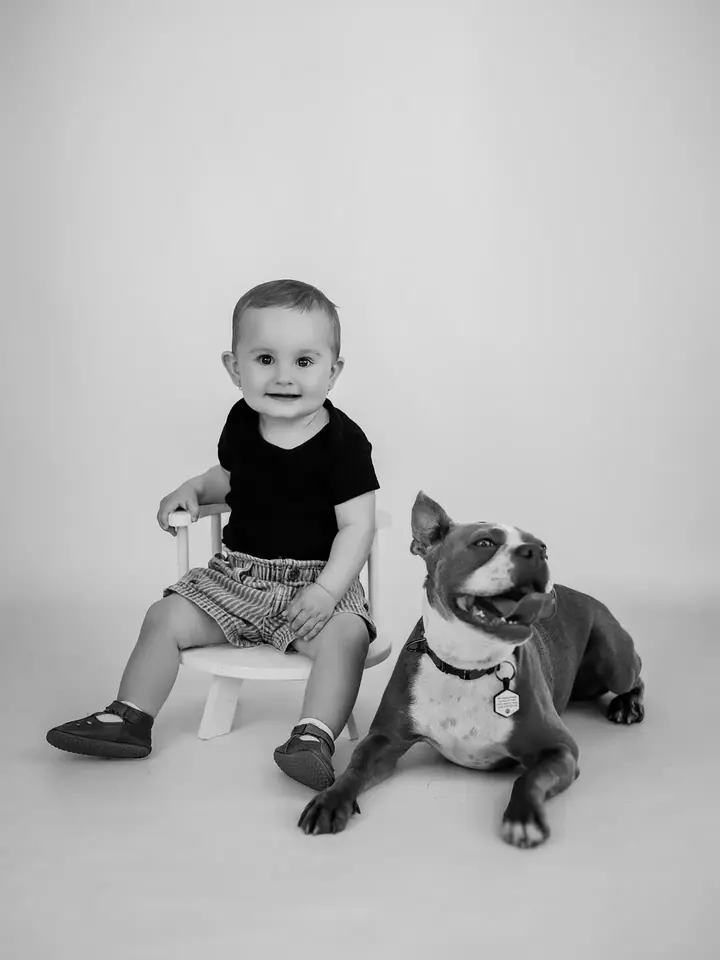
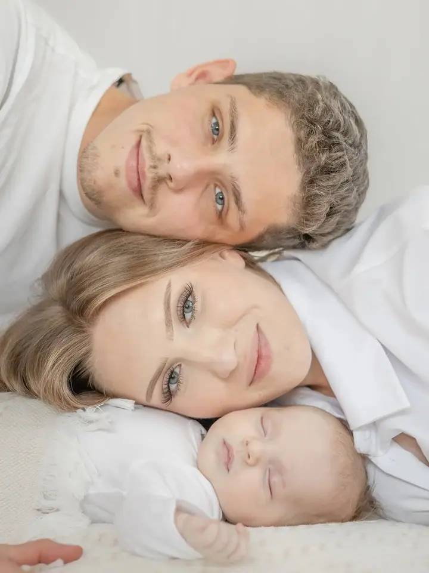
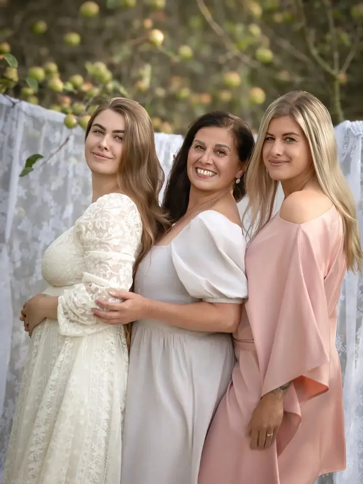

Rodinné focení
Hodinka s vašimi nejbližšími, kterou focení vedu jako hru. Dostanete 10 digitálně upravených fotografií a další si můžete dokoupit.

Jmenuji se Nikol Kudelková a fotím rodiny, děti i maminky v očekávání v Jeseníku a okolí. Mám ráda přirozený styl a pohodovou atmosféru, protože každý snímek je příběhem.
Rezervovat termínJsem fotografka se specializací na rodinné a dětské focení. Fotím hlavně v Mikulovicích a Písečné a na fotkách je pro mě vždy nejdůležitější zachytit vaše emoce a váš příběh.


Sama jsem máma dvou malých dětí, takže vím, že děti nebudou stát v řadě a usmívat se na povel. Focení proto vedu jako hru a vy i děti si během něj užijete spoustu srandy.
Snažím se tvořit přirozené a autentické fotografie, které vám budou ještě dlouho připomínat chvíle strávené s vašimi blízkými. Kromě rodin fotím i těhotenství, tematická minifocení a svatby.
Co fotím
Hodinka s vašimi nejbližšími, kterou focení vedu jako hru. Dostanete 10 digitálně upravených fotografií a další si můžete dokoupit.
Několikrát ročně pořádám tematická minifocení pro vaše nejmenší, například velikonoční, jarní, podzimní nebo vánoční. Termínů je omezeně, proto doporučuji sledovat můj Instagram.
Fotíme podle vás, u vás doma nebo venku v přírodě. Jde o klidné focení, kde máte čas jen pro sebe a své miminko.
Nafotím váš svatební den jako reportáž, která vám zůstane na celý život. Cena se odvíjí od vašich požadavků, proto se mi neváhejte ozvat.
Postup
Ozvěte se e-mailem, telefonem nebo přes formulář a řekněte mi, jaké focení si představujete.
Společně vybereme termín a místo, ať je to venku v přírodě, nebo u vás doma.
Žádné strnulé pózování. Hrajeme si, smějeme se a já mezitím fotím to, co je mezi vámi opravdové.
Z focení pečlivě vyberu a upravím fotografie, které dostanete v digitální podobě. Pokud se vám bude líbit víc snímků, můžete si je dokoupit.
Otázky
To vůbec nevadí. Mám dvě malé děti, takže vím, jak to chodí. Focení vedu jako hru a nejhezčí fotky vznikají právě ve chvílích, kdy se děti baví.
U rodinného focení dostanete 10 digitálně upravených fotografií, u minifocení a vánočního focení 5. Další fotky si můžete kdykoli dokoupit.
Těhotenské focení může probíhat u vás doma nebo venku. Vybereme místo, kde se budete cítit dobře.
Několikrát ročně, vždy s jiným tématem, například na jaře, na podzim nebo před Vánoci. Termínů je omezeně, proto doporučuji sledovat můj Instagram.